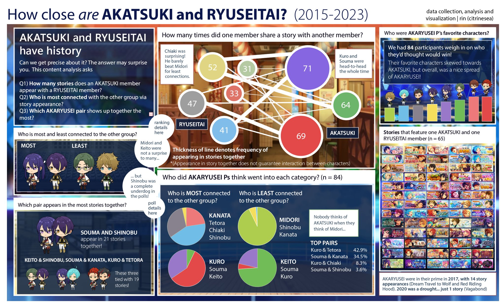
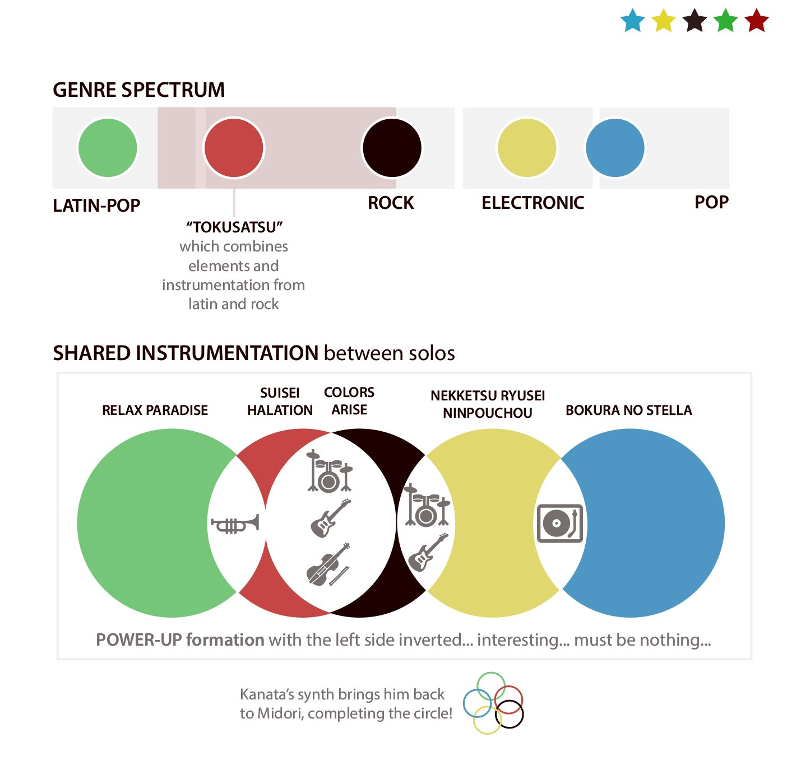
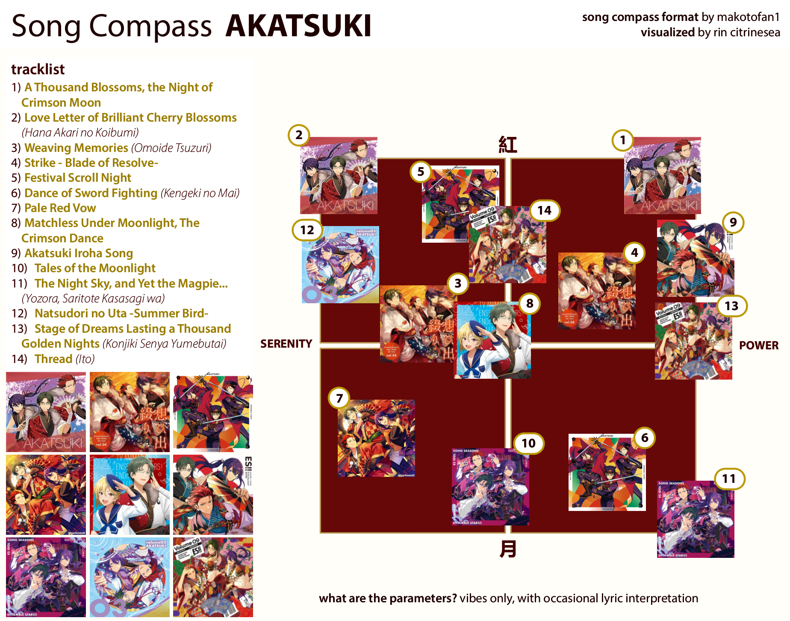

AKARYUSEI Story and Survey Results
Investigating how many stories AKARYUSEI share together, and what AKARYUSEI-Ps thought were the answers. Full page here
Red as Traditionalism in RYUSEITAI
Covers !!-era RYUSEITAI, RST-M and RST-N, how the color red constrains Tetora and Chiaki, and its ultimate dissolution.

Stylistic Similarities between RYUSEITAI Centers
Genres and instrumentation of RST center songs, as well as similarities to each other. Full page here.


Song Compasses
Placing AKATSUKI and RYUSEITAI songs along an arbitrary spectrum based off of vibes.


Colors Arise Lyrics Sheet
A color-coded lyrics graphic based off of 310mc's translation of Colors Arise.